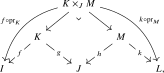

The characterization of envelopes of operads obtained in the previous section is neat, and immediately generalizes to the \(\infty \)-categorical setting. Nevertheless, this is not the definition of \(\infty \)-operads that usually appears in the literature. One inconvenience about this characterization is that it requires us to equip an \(\infty \)-category with a symmetric monoidal structure, which is a task substantially more involved than for classical categories since we can no longer ‘just write it down by hand’. It would be convenient if we could avoid reliance on symmetric monoidal structures.
Fortunately, this is possible: there is a variation of the envelope construction in which the concatenation of tuples becomes the categorical product, and hence does not need to be recorded as additional data. We have already seen this idea in action in our definition of commutative monoids in Chapter 5. Recall from Definition 8.1.3 that a commutative algebra in a symmetric monoidal \(\infty \)-category \(C\) is encoded by a symmetric monoidal functor \[ \Fin \to C, \] so its definition uses the given tensor product on \(C\). By contrast, if \(C\) admits finite products, a commutative monoid in \(C\) is encoded by a product-preserving functor \[ \Span (\Fin ) \to C. \] The additional left-pointing morphisms ensure that disjoint union in \(\Fin \) becomes the categorical product in \(\Span (\Fin )\), so no separately specified symmetric monoidal structure on \(C\) is needed.
We will apply the same mechanism to the envelope \(\Env (\Oo )\): by adjoining left-pointing morphisms, we obtain a variant of \(\Env (\Oo )\) in which concatenation of tuples is the categorical product, and therefore need not be encoded separately. Let us emphasize that this maneuver is merely about encoding the operad structure; it does not impose a cartesian tensor product on a category in which we later consider \(\Oo \)-algebras. Just as in the case of the span category \(\Span (\Fin )\), the construction naturally produces a \((2,1)\)-category rather than a \((1,1)\)-category, since composition is defined using pullbacks and is therefore associative only up to canonical isomorphism.
Construction 12.4.1. Let \(\Oo \) be a colored operad. We describe a (2,1)-category \(\Oo ^{\otimes }\) as follows:
- The objects of \(\Oo ^{\otimes }\) are unordered tuples \(\{x_i\}_{i \in I}\);
- A morphism \(\{x_i\}_{i \in I} \to \{y_j\}_{j \in J}\) in \(\Oo ^{\otimes }\) consists of a span \[ I \xleftarrow {f} K \xrightarrow {g} J \] of finite sets together with a multimorphism \(\phi _j \in \Oo (\{x_{f(k)}\}_{k \in K_j};y_j)\) for every \(j \in J\); here we write \(K_j := g^{-1}(j)\) for the preimage of \(j\) under \(g\). Together with the canonical notion of isomorphisms between such labeled spans, these form a groupoid \(\Hom _{\Oo ^{\otimes }}(\{x_i\}_{i \in I}, \{y_j\}_{j \in J})\).
- The identity of \(\{x_i\}_{i \in I}\) is given by taking \(f = g = \id _I \colon I \to I\), and taking \(\phi _j = \id _{x_j} \in \Oo (\{x_i\}_{i \in \{j\}};x_j)\).
- The composition of \((f,g,\phi _j)\colon \{x_i\}_{i \in I} \to \{y_j\}_{j \in J}\) and \((h,k, \psi _l)\colon \{y_j\}_{j \in J} \to \{z_l\}_{l \in L}\) is given by \((f\circ \pr _K,k \circ \pr _M, \xi _l)\) where \(\pr _K\) and \(\pr _M\) are the projection maps in the following
pullback diagram and for every \(l \in L\) the multimorphism \(\xi _l \in \Oo (\{x_{f(u)}\}_{(u,m) \in (K \times _J M)_l};z_l)\) is the image of \((\psi _l, (\phi _{h(m)})_{m \in M_l})\) under the composition map \[ \circ \colon \Oo (\{y_{h(m)}\}_{m \in M_l};z_l) \times \prod _{m \in M_l} \Oo (\{x_{f(u)}\}_{u \in K_{h(m)}}; y_{h(m)}) \to \Oo (\{x_{f(u)}\}_{(u,m) \in (K \times _J M)_l};z_l). \]

- The operad axioms make composition unital and associative up to the canonical isomorphisms induced by pullbacks of spans.
Lemma 12.4.2. The construction \(\Oo \mapsto \Oo ^{\otimes }\) defines a functor from colored operads to \((2,1)\)-categories over \(\Span (\Fin )\). The \((2,1)\)-category \(\Oo ^{\otimes }\) admits finite products, given by unordered concatenation of tuples, and the structure functor \(\Oo ^{\otimes }\to \Span (\Fin )\) preserves them.
Proof. The operad axioms and the canonical associativity isomorphisms for pullbacks make the composition law unital and associative. A morphism into an unordered concatenation of tuples is uniquely a collection of morphisms into its factors, since both the indexing span and its labeling operations decompose according to the corresponding partition of the target. Thus concatenation satisfies the product universal property. The empty tuple is terminal, and the same description for \(\Comm ^{\otimes }=\Span (\Fin )\) shows that the structure functor preserves these products. □
This time, morphisms in \(\Oo ^{\otimes }\) may be visualized as follows:
![Three columns. On the left, four circular nodes $x_1$ to $x_4$. In the middle, five circular nodes carrying the labels $x_2$, $x_1$, $x_3$, $x_4$, $x_2$, joined to the left column by left-pointing arrows recording the map $f$; note that $x_2$ receives two arrows, since it is hit twice. Right-pointing arrows then group the middle column into three rectangular nodes: the second and third enter $\phi_1$, the fifth enters $\phi_2$, and the first and fourth enter $\phi_3$. Each $\phi_j$ has a single output wire ending in a circular node $y_j$.](../../../_assets/diagrams/tikzpicture-a4433281e03f.svg)
The first part of the data consists of two maps \(f\colon \{1, \dots , 5\} \to \{1,\dots ,4\}\) and \(g\colon \{1, \dots , 5\} \to \{1,2,3\}\); in this case \(f\) is given by \(f(1) = f(5) = 2\), \(f(2) = 1\), \(f(3) = 3\) and \(f(4) = 4\), while \(g\) is given by \(g(2) = g(3) = 1\), \(g(5) = 2\) and \(g(1) = g(4) = 3\). In particular, the preimages of 1, 2 and 3 under \(g\) are \(\{2,3\}\), \(\{5\}\) and \(\{1,4\}\), respectively. The second part of the data consists of multimorphisms \(\phi _1\colon (x_{f(2)}, x_{f(3)}) \to y_1\), \(\phi _2\colon (x_{f(5)}) \to y_2\) and \(\phi _3\colon (x_{f(1)}, x_{f(4)}) \to y_3\).
For \(\Oo = \Comm \) we get \(\Comm ^{\otimes } = \Span (\Fin )\). Since the construction of \(\Oo ^{\otimes }\) is functorial in \(\Oo \), we obtain a functor \[ p\colon \Oo ^{\otimes } \to \Comm ^{\otimes } = \Span (\Fin ) \] which preserves finite products. As in the previous section, we may ask: can we characterize those \((2,1)\)-categories over \(\Span (\Fin )\) that are of the form \(\Oo ^{\otimes }\) for some operad? The fiber decomposition from (2’) remains valid, now in terms of categorical products. The product universal property decomposes morphisms according to the factors of their target, but it does not by itself isolate the corresponding factors in the source. Moreover, the morphisms over right-pointing spans do not determine the morphisms over a general span \(I \leftarrow K \rightarrow J\). To reduce the general case to the right-pointing case, we need distinguished lifts of left-pointing spans.
To reduce the general case to the special case, consider an object \(\{x_i\}_{i \in I}\) of \(\Oo ^{\otimes }\) and consider a morphism \(f\colon K \to I\) of finite sets. We may then form the morphism \(\widetilde {f}\colon \{x_i\}_{i \in I} \to \{x_{f(k)}\}_{k \in K}\) in \(\Oo ^{\otimes }\) whose underlying span of finite sets is \(I \xleftarrow {\smash {f}} K \xrightarrow {=} K\) and whose multimorphisms \(\phi _k \in \Oo (\{x_{f(k)}\}, x_{f(k)})\) are the identity morphisms \(\id _{x_{f(k)}}\). This morphism \(\widetilde {f}\) may be visualized as follows:
![Four columns. On the left, four circular nodes $x_1$ to $x_4$. Left-pointing arrows recording the map $f$ join them to a middle column of five circular nodes labelled $x_2$, $x_1$, $x_3$, $x_4$, $x_2$, so that $x_2$ is hit twice. Each node of the middle column is then wired straight across to a rectangular node carrying the corresponding identity $\id_{x_2}$, $\id_{x_1}$, $\id_{x_3}$, $\id_{x_4}$, $\id_{x_2}$, and on to a circular node with the same label in the right column. None of these wires cross.](../../../_assets/diagrams/tikzpicture-982ac771c53e.svg)
This morphism has the following special feature, which is the shadow of the general notion of a \(p\)-cocartesian morphism that we will meet in Definition 23.1.1:
- (3”)
-
Consider objects \(\{x_i\}_{i \in I}\) and \(\{y_j\}_{j \in J}\) in \(\Oo ^{\otimes }\), and consider a span \(I \xleftarrow {f} K \xrightarrow {g} J\). Given a morphism \(\widetilde {h} \colon \{x_i\}_{i \in I} \to \{y_j\}_{j \in J}\) in \(\Oo ^{\otimes }\) lifting1 the given span, there exists a unique morphism \(\widetilde {g} \colon \{x_{f(k)}\}_{k \in K} \to \{y_{j}\}_{j \in J}\) which lifts the span \(K \xleftarrow {=} K \xrightarrow {\smash {g}} J\) and satisfies \(\widetilde {h} = \widetilde {g}\circ \widetilde {f}\):
Indeed, the lift \(\widetilde {h}\) is encoded by certain multimorphisms \(\phi _j \in \Oo (\{x_{f(k)}\}_{k \in K_j};y_j)\), and this is precisely the data we need for defining the lift \(\widetilde {g}\). The full cocartesian condition is the pullback-square condition appearing as condition (3) in Definition 12.4.3.
In a sense, we see that these morphisms \(\widetilde {f}\) in \(\Oo ^{\otimes }\) do not really contribute very much apart from encoding the categorical product structure. These morphisms, and more generally the cocartesian morphisms lying over left-pointing spans, are called inert morphisms. In contrast, the morphisms in \(\Oo ^{\otimes }\) living over right-pointing spans are the ones that encode the actual operad structure, and are called the active morphisms.
Under the product description of Lemma 12.4.2, the morphism \(\widetilde {f}\) is the map whose \(k\)-th component is the projection onto \(x_{f(k)}\).
We have now finally achieved what we were after: the entire data of the operad \(\Oo \) is encoded by the \((2,1)\)-category \(\Oo ^{\otimes }\) together with its functor to \(\Span (\Fin )\), and the properties we singled out tell us which such functors are obtained via this procedure. These properties still make sense in the \(\infty \)-categorical setting, and we will use them in our definition of \(\infty \)-operads:
Definition 12.4.3. An \(\infty \)-operad is a pair \(\Oo = (\Oo ^{\otimes },p_{\Oo })\) consisting of an \(\infty \)-category \(\Oo ^{\otimes }\) equipped with a functor \(p_{\Oo }\colon \Oo ^{\otimes } \to \Span (\Fin )\) satisfying the following conditions:
- (1)
-
The \(\infty \)-category \(\Oo ^{\otimes }\) admits finite products, and the functor \(p_{\Oo }\) preserves finite products;
- (2)
-
For every finite set \(I\), the product in \(\Oo ^{\otimes }\) defines an equivalence \[ \prod _{i \in I} \Oo ^{\otimes }_{\{i\}} \iso \Oo ^{\otimes }_I. \] Here we write \(\Oo ^{\otimes }_I\) for the fiber of \(p_{\Oo }\) over the set \(I\).
- (3)
-
For a morphism \(f\colon J \to I\) in \(\Fin \) and objects \(X_i \in \Oo ^{\otimes }\), the map \(\widetilde {f}\colon \prod _{i\in I} X_i \to \prod _{j \in J} X_{f(j)}\) whose \(j\)-th component is the projection to \(X_{f(j)}\) is \(p_{\Oo }\)-cocartesian, in the sense that for every \(Y \in \Oo ^{\otimes }\) the following square is a pullback square:
Remark 12.4.4. Our definition of \(\infty \)-operad is a priori different from that of Lurie (2017), who instead works with functors \(p_{\Oo }\) whose target is the category \(\Fin _*\) of finite pointed sets. To relate the two approaches, recall from Lemma 5.3.8 that \(\Fin _*\) is equivalent to the subcategory \(\Span (\Fin ,\inj ,\all )\) of \(\Span (\Fin )\) in which the left-pointing morphisms are required to be injective. We will show in Section 17.4 below that pullback along the resulting inclusion \(\Fin _* \hookrightarrow \Span (\Fin )\) induces an equivalence between our \(\infty \)-category of \(\infty \)-operads and Lurie’s one.
One advantage of working over \(\Fin _*\) is that it is a strict 1-category. In Lurie’s model, the category \(\Oo ^{\otimes }\) from Construction 12.4.1 also becomes a strict 1-category, and can therefore be directly imported into the world of \(\infty \)-categories, showing that every colored operad gives rise to an \(\infty \)-operad. While the same can in principle be done at the level of \((2,1)\)-categories, we will not develop the theory of \((2,1)\)-categories in this book, and instead import classical operads via Lurie’s model; see Proposition 17.4.9.
On the other hand, there are a variety of reasons to work over \(\Span (\Fin )\) rather than \(\Fin _*\). First, the span approach makes clear the orthogonal roles played by the backwards and forwards maps; this separation is less visible in \(\Fin _*\). Second, allowing only injective backwards maps breaks the property that concatenation of unordered tuples is a categorical product, so conditions on \(\Oo ^{\otimes }\) need to be formulated in a slightly more complicated way. And third, the span perspective generalizes more easily to other settings, making it easier to connect the theory developed here to concepts like Mackey functors, normed \(\infty \)-categories and six-functor formalisms. For example, it allows us to treat the theory of (co)cartesian monoidal structures as an instance of Barwick’s more general unfurling construction in Chapter 15.
Remark 12.4.5 (Other models for \(\infty \)-operads).
The span-based model used in this book and Lurie’s model over \(\Fin _*\) from Section 17.4 are not the only available descriptions of \(\infty \)-operads. In the dendroidal approach, introduced by Moerdijk and Weiss (2007), the simplex category is replaced by a category of trees. The presentation of \(\infty \)-operads by complete dendroidal Segal animae is due to Cisinski and Moerdijk (2013). A direct comparison with Lurie’s model is given by Hinich and Moerdijk (2024); see [Heuts and Moerdijk (2022)] for a comprehensive account of dendroidal homotopy theory.
The classical description of one-colored operads as associative algebras in symmetric sequences also admits a homotopy-coherent generalization due to Haugseng (2022). More generally, this construction treats varying animae of colors by means of a double \(\infty \)-category of symmetric collections; see [Haugseng (2023)] for a general introduction to \(\infty \)-operads. A related viewpoint describes pinned \(\infty \)-operads by analytic monads on slices \(\An _{/S}\), with the anima \(S\) of colors allowed to vary [Gepner et al. (2022); Haugseng (2023)]. This description is compared directly with both Lurie’s model and the span-based model through their Lawvere theories by Haugseng (2023). More general Segal-type formalisms, notably the theory of algebraic patterns developed by Chu and Haugseng (2021), provide a common framework for these and many similar homotopy-coherent algebraic structures. The general theory of envelopes for algebraic patterns developed by Barkan et al. (2022) contains our construction of operadic envelopes in Section 17.3 as a special case. We will not otherwise use the alternative presentations discussed in this remark.
Before studying \(\infty \)-operads in more detail, we will give a proper introduction to span \(\infty \)-categories and their basic properties in the next chapter. We return to \(\infty \)-operads and their algebras in Chapter 14.
Exercises
Exercise 12.1 (Equivariance conditions). In the definition of an operad, we have not specified how the permutation actions on \(\Oo (n)\) interact with the composition structure. In this exercise, you will formulate the missing conditions.
Let \(\Oo \) be a non-colored operad, and consider operations \(P \in \Oo (k)\) and \(Q_i \in \Oo (n_i)\) for \(i=1,\dots ,k\).
- (1)
-
Consider a permutation \(\sigma \in \Sigma _k\). Using the motivating example of the endomorphism operad \(\Oo = \oEnd _C(A)\), write down a rule for expressing the operation \[ (P\sigma )(Q_1, \dots , Q_k) \] as an operation of the form \(P(R_1, \dots , R_k)\tau \) for certain operations \(R_i\) and a certain permutation \(\tau \in \Sigma _{n}\), where \(n := \sum _{i=1}^k n_i\).
- (2)
-
Consider permutations \(\sigma _i \in \Sigma _{n_i}\) for all \(i = 1, \dots , k\). Again using \(\Oo = \oEnd _C(A)\) as motivating example, write down a rule for expressing the operation \[ P(Q_1\sigma _1, \dots , Q_k\sigma _k) \] as an operation of the form \(P(Q_1, \dots , Q_k)\tau \) for a certain permutation \(\tau \in \Sigma _{n}\), where \(n := \sum _{i=1}^k n_i\).
- (3)
-
Formulate the corresponding equivariance conditions for a colored operad. In doing so, keep track of the reindexing of the input colors under each permutation.
Exercise 12.2 (The associative operad). Write out the composition maps and the \(\Sigma _n\)-actions in the case of the associative operad \(\Assoc \).
Exercise 12.3. Let \(C\) be a symmetric monoidal category. Show that:
- \(\Triv \)-algebras are simply objects of \(C\);
- \(\Ee _0\)-algebras are ‘pointed objects’ of \(C\), i.e., objects \(A\) equipped with a ‘unit map’ \(\eta \colon \unit \to A\).
- \(\Comm \)-algebras are objects \(A\) equipped with maps \(\eta \colon \unit \to A\) and \(m\colon A \otimes A \to A\) which are unital, associative and commutative.
- \(\Assoc \)-algebras are similar but without commutativity.
Exercise 12.4 (Universal property of trivial operads). Let \(\Oo \) be a colored operad. Show that the colors of \(\Oo \) together with the sets \(\Oo ((y);x)\) of unary operations form a 1-category \(\Oo _{\lra {1}}\), called the underlying category of \(\Oo \), where \(\lra {1} := \{1\}\). Show furthermore that for every 1-category \(C\), restriction to the unary operations defines a bijection between the morphisms of colored operads \(\Triv _C \to \Oo \) and the functors \(C \to \Oo _{\lra {1}}\), where \(\Triv _C\) is the trivial operad of Example 12.2.6.
Exercise 12.5. Let \(\Oo \) be a colored operad, and let \(C\) be a symmetric monoidal category. Recall that we defined an \(\Oo \)-algebra as a morphism of colored operads \(A\colon \Oo \to \Mm _C\). Spell out in explicit terms all the data contained in such an \(\Oo \)-algebra. In the special case of \(\Oo = \oLMod \), verify that this structure precisely encodes a pair \((A,M)\) of an associative algebra \(A\) in \(C\) together with a left module \(M\) over it.
Remark: Saying ‘left’ versus ‘right’ is just a convention; the same operad also encodes right actions.
Exercise 12.6. Compute the envelope \(\Env (\Assoc )\) of the associative operad, and show that it may be described as follows:
- The objects are finite sets \(I\);
- The morphisms \(I \to J\) are tuples \((f,\preceq _j)\) consisting of a morphism \(f\colon I \to J\) of finite sets and a collection of linear orders \(\preceq _j\) on each of the preimages \(f^{-1}(j)\) of \(f\);
- The symmetric monoidal structure is disjoint union.
Exercise 12.7. Show that the assignment \(\Oo \mapsto \Env (\Oo )\) is functorial: every morphism of operads \(\Oo \to \Pp \) induces a symmetric monoidal functor \(\Env (\Oo ) \to \Env (\Pp )\). Deduce from the terminal morphism \(\Oo \to \Comm \) the symmetric monoidal functor \(p\colon \Env (\Oo ) \to \Fin \) used above.
Exercise 12.8. Show that the assignment \(\Oo \mapsto \Env (\Oo )\) is left adjoint to the assignment \(C \mapsto \Mm _C\): for an operad \(\Oo \) and a symmetric monoidal category \(C\), there is a bijection between operad morphisms \(\Oo \to \Mm _C\) and symmetric monoidal functors \(\Env (\Oo ) \to C\).
Notes
Generated from the authoritative LaTeX source.